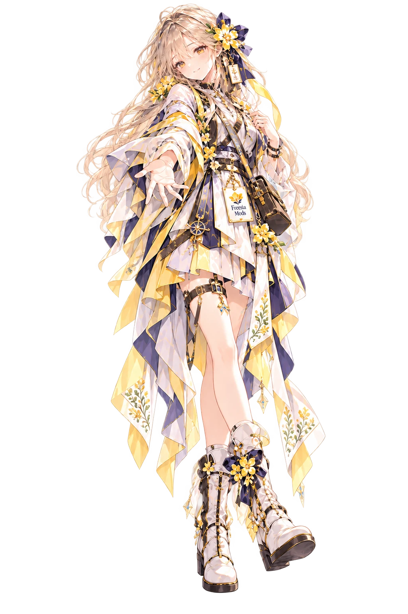
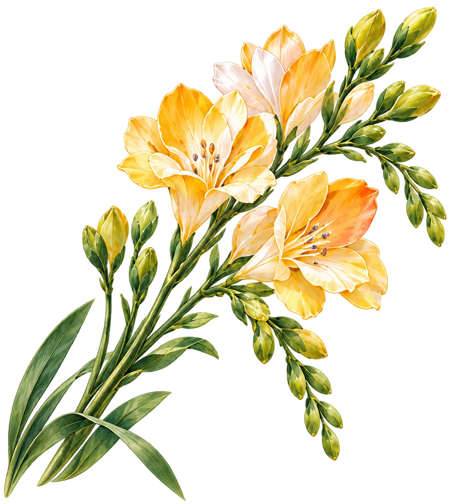

先理解，再改变
先读懂原作的节奏、边界与玩家期待，再决定值得加入的新可能。
MODS · CROSS-GAME CREATION
让喜欢的游戏，长出新的可能。
New possibilities in games we love.


CREATE · ADAPT · SHARE · GROW
先读懂原作的节奏、边界与玩家期待，再决定值得加入的新可能。
用清晰范围、真实状态和可复查结果，让每件作品拥有自己的完成标准。
品牌负责连接与识别，不覆盖每个游戏和 Mod 自己的玩法性格。
PUBLIC WORKS
系列归属由显式登记决定，作品状态与限制直接复用公开项目事实。
HOST GAME
《杀戮尖塔 2》角色 Mod · 三幕 Headless 验证通过
Iris Core 的首个玩法 Consumer：以 Iris / Sakura 双形态与 Node、Compile、Bloom、Handoff、Dual 组成可切换的构筑循环，已完成 106 张卡、13 件遗物和 3 瓶药水的程序内容。
SHARED FOUNDATIONS
SHARED FOUNDATION · Slay the Spire 2
面向 Iris / Sakura《杀戮尖塔 2》模组的独立共享运行时，统一管理模块生命周期、配置、存储、诊断、内容选择与 Iris Hub；单独启用时不注册或修改玩法内容。
关系说明：它是部分 Freesia Mods 的技术基础，不代表所有 Freesia Mods 共用同一运行时。
CREATE · ADAPT · SHARE · GROW